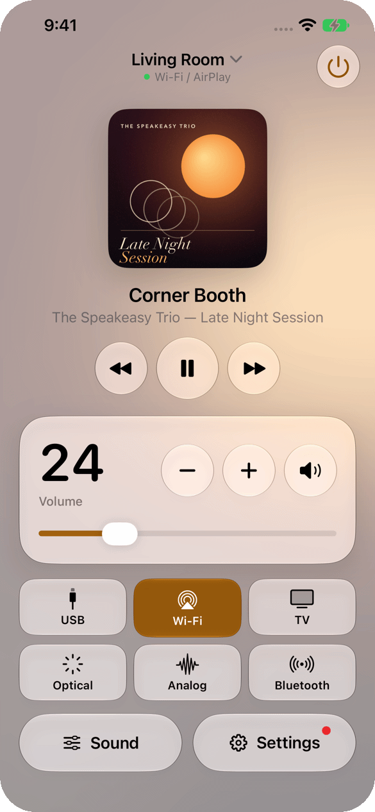
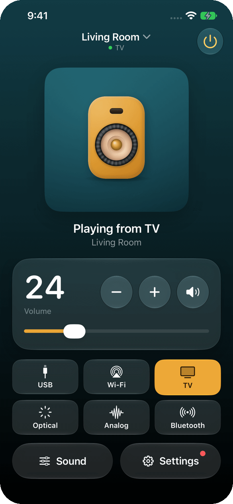
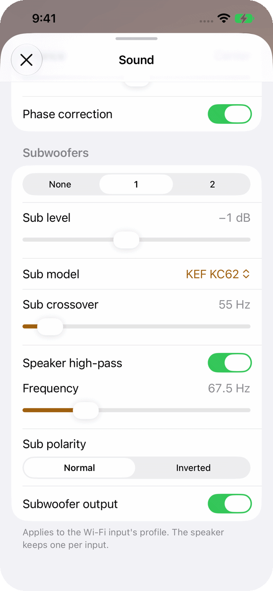
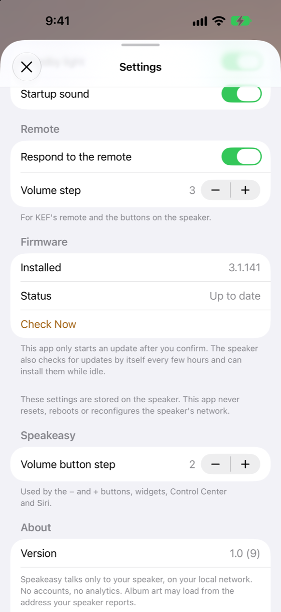

Speakeasy controls your KEF LSX II, LS50 Wireless II or LS60 Wireless straight over your home network: now playing, volume, inputs and power on one screen, the full sound and subwoofer settings, the speaker's own settings and firmware, plus a Home Screen widget, Control Center controls and Siri. It is made for iPhone, including the iPhone Duo.




Private by design
No accounts, no analytics, no tracking. Speakeasy talks only to your speaker on your local network. Privacy policy
On the Mac
Speakeasy for Mac puts the same controls in your Mac's menu bar, with keyboard shortcuts. Download the latest release; a Mac App Store version is in review.
Speakeasy is independent and not affiliated with KEF. Need help? See Support.